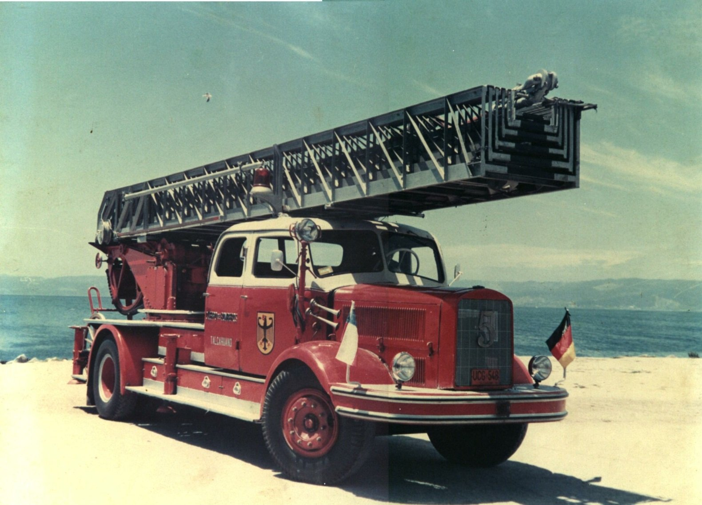

Magirus Deutz, 1954
Unidad del material mayor histórico de la Quinta Compañía de Bomberos de Talcahuano.
Año: 1954.
Volver a las unidades históricas
La Quinta

Unidad del material mayor histórico de la Quinta Compañía de Bomberos de Talcahuano.
Año: 1954.
Volver a las unidades históricas